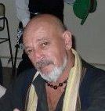

De los hijos de Vicente Casartelli y María Rosa Villarroel, detallamos a continuación:
1.Vicente Inocencio Casartelli, que se casó con Isabel Ferrero Casini(1919-2010); unión de la que nacieron Cuatro hijos:
1.1.Hugo Omar Casartelli (1941-2005), casado con Elsa Olocco; esta última, vive en Barrio Cornú, anexo, Córdoba Capital
1.2.Rosa del Valle Casartelli- Chochi- (nacida en 1945)casada con José Pinauda- Barrio Alta Córdoba, Córdoba, Capital; 4 hijos con apellido Pinauda: Silvana, nacida en 1979, estudiante; Gabriel Darío, nacido en 1981- diseño gráfico; Mariana del Valle, nacida en 1982, estudiante y Guadalupe nacida en 1986, gastronómica.
1.3.Isabel Elisa Casartelli (Pochi)(nacida en 1943)vive en Barrio Mataderos- zona San Vicente, Córdoba, Capita-, casada con José Banegas, 2 hijos de apellido Banegas: Laura nacida en 1979- docente y Nicolás nacido en 1977- estudiante
1.4Vicente Lorenzo Casartelli (nacido en 1954)(artesano en juegos de ingenio, negociante, vive en Mendoza, Argentina); dos hijos con apellido Casartelli, Leonardo nacido en 1982 y Jesús nacido en el 2003

Vicente Lorenzo Casartelli (hijo de Vicente Inocencio e Isabel Ferrero(Mendoza)

Vicente Inocencio Casartelli con su esposa Isabel Ferrero Casini